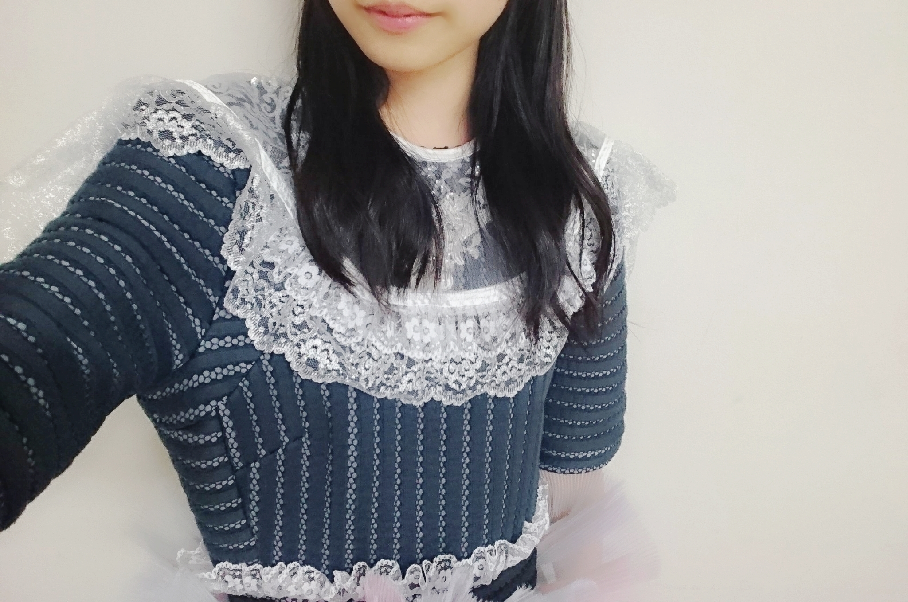
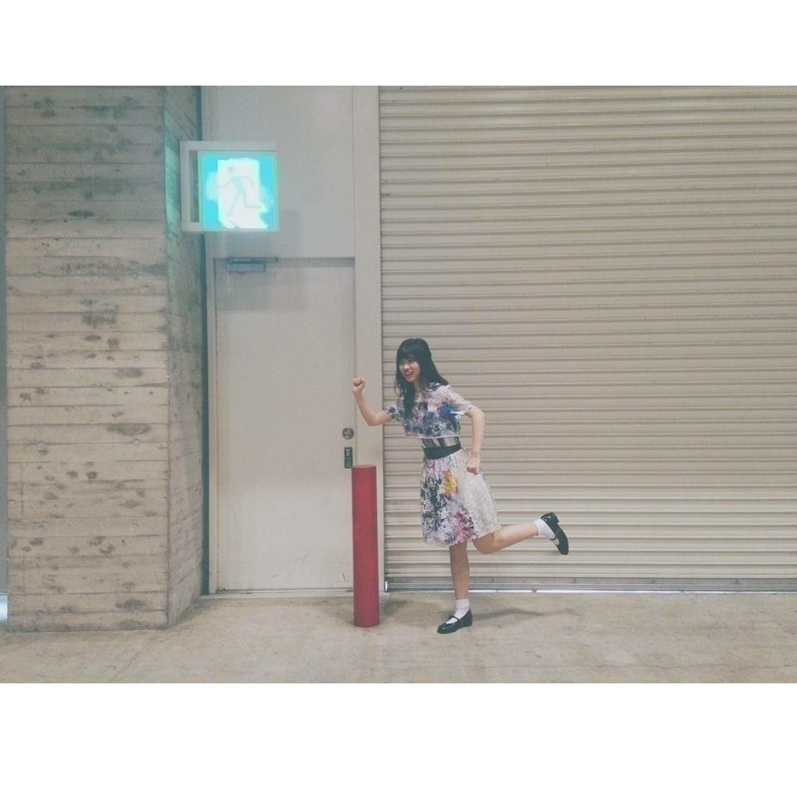

2016/0627Monカ<力
白石さんのお洋服
おさがりしました！
衛藤さん
川村さんにもおさがり頂いた事があるのですが
やっぱり嬉しい事ですね♬
おさがりって年下の特権って感じがして
普段はあまり年下だってことよく思わないし
損な事のほうが多いけど
このときばかりは
年下で良かったって思える嬉しい事です
ちなみに、白石さんから
3着頂きましたm(._.)m
本当にありがとうございます
大切にします
アルバム個別握手会in幕張メッセ
《髪型》
1部ストレート
2部ゆるまき
3部ハーフアップ
4部三つ編みアレンジ
5部テラダ公案海老フライヘアー

こちらの画像が海老フライヘアーです。
5部でやっていました
分かりやすくする為に
4本分けて
撮影しておりますが
実際普通にしてみると
ヒッピーな
仕上がりになります
リボンとかあったら
尚良くなると思われ
この髪型爆発的に
流行れ！！！！！！
《お衣装》
1部嫉妬の権利 水色ver
2部ポピパッパパー
3部不等号
4部今話したい誰かがいる
5部嫉妬の権利 ピンクver

ポピパッパパー凄くお気に入り
また、着たいなm(._.)m
もしかしたら着るかもです
不等号は
普段着れない方の
形のを着ました


今話したい誰かがいるは
前回京都でも着たのですが
その時は飛鳥さんverを着ていたのですが
今回、テラダのが用意あったのでテラダverのものを着ました
《皆さんに質問》
質問①
自分の座右の銘を教えて下さい
質問②
おすすめの本を教えて下さい
もっと
自分の知らない事を
学びたくて
最近どうやったら
いろんな
世界を知れるんだろうって
よく考えます。
コメントとか
読ませて頂いてると
そこには私の知らない事とか私では考え付かない
発想があるから
コメントを
読むのが好きです
もし良かったら、
質問に答えてくれると嬉しいです
ご気軽にして下さい♬
最後まで
読んでくださりありがとうございました
おやすみなさいです

逃げろーm(._.)m
2016/06/27 20:48｜個別ページ｜コメント(1301)
2016/0625Sat一瞬の
おはようございます！
こんにちは
こんばんは
らんぜの勢い
止まらんぜーーーーー！
寺田蘭世です
宜しくお願い致します！
夏ですね
外の空気の質感と香りが
夏を感じさせます
皆さんは夏の香り分かりますかね？
どう表現したらいいのか
わからないのですが
季節ごと香りってあるよね
私は春の香りを嗅ぐと
ドキドキザワザワします
これ、私だけかな(> <)
まぁ、そろそろお洋服もガッツリ衣替えしなきゃですね
《注意》
すみませんこの先結構前の話になります書き溜めておいたブログ達です。個別握手会で着たお洋服の紹介ブログをなかなかアップ出来てなかったので、、、すみません宜しくお願い致しますm(._.)m
《個別握手会in千葉》
ありがとうございました
以前のブログに書きましたが
握手会は直接顔を見て話せるから好きです
やっぱり今の時代
インターネットで何でも出来るから
直接会わないで
メールとか電話
私達の場合はモバメやブログのコメント欄とかでも
意見の交わし合いはできるけど
表情が見えない、、、
でも、握手会はその瞬間瞬間に色んな感情があって
それが目に見えるから
安心するし
お互い意思疎通できている気がしてます
だから、私は握手会が大好きです
皆の1部のちょっと眠そうなお顔
笑ったお顔
真剣に話してくれるお顔
泣きそうなお顔
ラストの部での
今日はありがとうの言い合い
全部全部好きです！
《髪型》
1部：ストレート
2部：猫耳風
3部：ゆるめ巻きおろし
4部：高めのツインテール
《お洋服》
1部：猫柄のワンピース
2部：猫柄のワンピース
3部：Cherry柄のワンピース
4部：Cherry柄のワンピース
西野さんの生誕パーカー
5部はせっかく頂いたので急遽着させて頂きました
西野さんの生誕パーカーとキャップ
ありがとうございます！

ピザハットさんのwebＣMで新人店員で出させて頂いたこと、、、m(._.)m
有りがたく思います
乃木坂店は閉店するらしいのですが
すごくいい経験になりました！
西野さんと2人でお仕事出来たこともそうですが
はじめてCM撮影の現場を経験出来たことも良かったなって思います！
ありがとうございました！
撮影：和田まあやさん
4部私服：Candy Stripper さん
このお洋服はNOGIBINGOの収録のときも着ました！
キャンスパさんのSALEで買いました
半額くらいで買えました
我ながら自分買い物上手だと思うm(._.)m

1枚目ブレちゃったーっと言う事でもう1枚パシャリしてもらった
私の癒しはまあやさんだよ(^^)
そう言えば４６時間tvのカラオケ企画のまあやさんが面白すぎて
久々に笑い泣きしました
滅多に人前で大笑いすることないので
自分でもびっくりしました
今でも思い出すだけで
笑っちゃいます
昨日のブログに
私の事書いてくれてて
嬉しかった！
やっぱりまあやさんLOVE
この日は
かりんちゃんの生誕もありました！
もちろんお邪魔しました
凄くセンスの良き
生誕でしたかりんたんの好みがギュッと詰まってた(^^)
可愛いシールそしたらね
イタズラで生駒さんが
私のお尻に
いつの間にか貼っつけたらしい
気付かなかった、、、
だから生駒さんの名前シールも貼って3部は握手してました(^^)
1、2部は猫柄のワンピース
こんな感じでした
古着屋さんです
女の子にどこのお洋服ですかって最近良く聞いてもらうんだけど
ほとんど古着で参考になれないごめんね
でも、古着屋さんらんぜきっかけで行くようになったーって声が多くて
ビックリと嬉しさ(^^)
そして今回
15枚目シングルでは
初５部制になりました！
関東は５部制です
宜しくお願い致します
まず、本当に嬉しいです
楽しい時間が増えた事幸せに思います
ありがとうございます。
まだ、4部制の会場もあります
そこはやっぱり悔しい
でも、このちょっと悔しいくらいが丁度いいです。
本当は弱いのに
悔しいって気持ちの方が
燃えるタイプなので
これからもそれを原動力にし誰も歩いたことのない道を私が作りたい
それを真似されるくらいの
人になりたい。
でも、すごくすごく感謝してます
これをまず報告させてください！！
ちょっと前の私じゃ考えられません。
初めは2部くらいずつ
持たせて頂いて
それもまばらで列が何度も途切れることもありました
そこから1部制になり
悔しい思いもありました。
ずっと研究生として
活動してて
やりたい事、
夢
希望
沢山あったけど
何もできなくてもどかしい事がありました
17歳となった今
ようやくここに来ました
もちろん目指している場所はまだまだ遥か上にあります。
が、まずは感謝の気持ちを忘れず
今まで通り私らしくやりたいです。
こういった1つ1つも
皆で喜びたい！
ありがとうございます！
頑張るぞっ
これからも一緒に頑張ろうね
宜しくお願い致します！！！
そして、勝手ながら15枚目の個別握手会は
9月とか10月だから
生誕祭、、、
すでにワクワクしております(^^)
割といろんなメンバーの生誕祭にお邪魔してるのですが
あれ、すごく楽しいよね
年に一回の楽しみ
アイドルになって良かったって思う瞬間の
1つです(^^)
なんか、他の言葉が見当たらないので
いつもこんな事しか言えませんが
これからも宜しくお願い致します！
ありがとうございました！
横浜14枚目ラスト握手会は次のブログで書きます
話題遅れててごめんなさい
ブログをアップするの躊躇する癖を治したい
なんか、果たしてこんなブログで良いのかなとか
その他にも
色々とアワアワって
気にし過ぎて
アップするの緊張しちゃうんですm(._.)m
スーパービビリ
そして、もう1つ
アップするタイミングを損ねたブログがあるので
載せます
すぐ載せますm(._.)m
もう、ブログをアップする事を躊躇わないぞ
この流れから全く関係ないないのですが
タピオカ
タピオカ
誰か一緒に行ってくれる方
いらっしゃいますか？
タピオカ
タピオカ
本日はアルバム握手会です
なんのお衣装を着たのかは
また、追って書き書きします
今回は嫉妬の権利のお衣装絶対着るよ！
何色の着ようかな(^^)
お気をつけてお越しください！
ジメジメの季節
水分補給もお忘れなく！
2016/0622Wed白いとこ
選抜総選挙
毎年ドキドキします、、、
まゆゆさん推しの私としてはやっぱり悔しさもあるけど
指原さん凄いな、、、
あと、佐藤すみれさんが
ランクインしてたのがすごく嬉しいです
まゆゆさんと
佐藤すみれさんが
私の推しメンです！
ご卒業されてますが
元SKE48さんの
平松可奈子さんも推してて
握手会にも行ったことありました
おはようございます
こんにちは
こんばんは
寺田蘭世です
アルバム個別握手会in京都
ありがとうございました(^^)
メールでは
すぐ書いたのですが
ちょっと寂しかったなm(._.)m
自分の気にし過ぎなのかもしれない
昔から些細なことでも
すぐ過剰に反応しちゃう性格なので
だけど、こういう事も
なにかの『きっかけ』に
繋がるだろうし
こういうことで
チャンスを掴むこともできるし
その反対だってありえます。
人生何がきっかけで
どうなるかは誰にも分からないけど
そのぶん大変ですが
そのぶん楽しいんだよね
楽しいだけでなく色々考える握手会でした！
でも、元気です！
心配かけてたら申し訳ありませんm(._.)m
４部は1部とかに比べて
沢山の方が会いに来てくださいました！
アルバムで初めましてさんも来て下さったりと嬉しかった(^^)
終始元気にやらせて頂きました
皆様
これからもよろしくね！
〈髪型〉
1部巻きおろし 頭にリボン
2部ハーフツイン
3部お花ヘアー
4部ポニーテール
3部のお花ヘアー
これです
私がよくやるやつ(^^)

〈衣装〉
1部太陽ノック デニムver
2部命は美しい
3部今、話したい誰がいる
4部ハルジオンが咲く頃
でした(^^)
最後にハルジオンを着ました
今回は11枚目〜14枚目シングルの衣装っという事ですが
京都でシングルの衣装殆ど着てしまいましたが
また、どこかで着ます！
嫉妬の権利のお衣装は、あまり披露する機会もなかったので
ここで見てもらいたいな
色は3色
・ピンク
・紫
・水色
があるのですが
ちなみに私は水色なのです
他のメンバーのを借りて
3色制覇したい！
太陽ノックデニムver
今日も朝からお仕事でした
早く解禁したい事が増えた(^^)良きことだ
《おまけ》
4ショットと
5ショット、、、
後ろのりんごさん、、、

2016/0619Sun漢字
寺田蘭世です
深川さんの卒業コンサートin静岡
二日間終わりました
乃木坂４６として
深川さんとLIVEをするのは昨日が最後でした。
想像以上に泣いてしまいました。
メンバーやスタッフさん
ファンの方の涙をみて
深川さんは本当に皆から愛されていたんだなって
改めて思いました。
私は深川さんみたいには
なれないし
深川さんはこの世界で１人しかいない人だけど
こういう人になりたいって心の底から思えるお手本の様な方でした。
あんなに優しい人には
この後の人生何年生きたとしても一生会えない気がします。
そのくらい深川さんは
心の綺麗な方でした。
選抜とアンダー
１期生と２期生
こんな壁のせいでなかなか
一緒にお仕事をする機会もなかったのですが
それでも、たまに話して下さる深川さんは本当に聖母でした。
モバメでは書いたけど
本当はやりたい事がありました。
もう、これ以上後悔はしたくありません。
だから、深川さんが
私の右耳にこっそり話してくれたあの言葉は
叶えなきゃいけない！
京都でアルバム個別握手会がありました。
その楽屋にも
深川さんが居るんじゃないかなって
正直、実感がわかないけど
深川さんが決めた
道だから
これからも応援したいです(^^)！
お気に入りの画像
LIVEリハーサルのときにお揃い(^^)

深川さん大好き
2016/0609Thuう。
リアルタイムで
選抜発表を観てました
もちろん収録をしてるので
結果もその場の空気も
知ってたけど
また、それとはなにか違うものを観てる感覚になりました。
見終わったとき
不安
悔しい
始めにパッと想いついた単語はこんなものでした。
去年の夏12枚目シングルははアンダーの3列目に居ました
ようやく、11枚目シングルで研究生から昇格して初めてジャケット撮影に参加できたり「乃木坂46」として活動することが出来ました
13枚目で初めてアンダーのフロントに立たせて頂き
そして、ユニット
サンクエトワールに参加したりアンダーメンバーで武道館をやらせて頂いたりしました。
この期間は私に沢山の
経験をさせてくれました。
14枚目では
去年では考えられない程
雑誌等に出させて頂けたり
撮影って楽しい
自分の世界観を作る楽しさにより気付かせてくれたり
アンダーライブは
怪我のため欠席してしまったのが何より悔しかった。
でも、初めてお仕事を欠席してしまいましたが
そのぶん普通に活動してたら得られない感情を
得られました。
上手くは言えませんが
客観視って大事だし
いつも同じ速度で走っていても止まって見える
もっと、色んな道をバラバラの速度で動いてみたいって思いました。
そして、中元さんのお隣で
センターポジションに1番近い場で
間近で色んな刺激を受けました。
色々ありましたが
そこから去年の夏12枚目シングルから約1年が経とうとしています
今の私はどうですか？
1年って長かった
でも、振り返るとあっという間でした。
初期の頃から
センターに立ちたい
っと言わせてもらっていて
だから、気が強そうとか
言われてきましたが
そういう事ではありません。
唯、目標を恥じらいなく言える気持ちだけを持ってるそれだけです。
本当は誰だって心の中で叶えたい目標って持ってると思うんです
でも、それを公言できるかできないかの差です。
こんな風に書いていますが
それは簡単な事ではありません。
別に公言しなくたって良い事です
むしろ、大きな声で言う方が馬鹿だと我ながら思うんです。
だって、叶わなかったら
恥ずかしい
なら、言わないほうが楽
普通ならこう考えると思います。
でも、私は不器用
スーパー不器用です
だから、言います！
言い続けます！
気弱くて
極度の心配症だから
流石にもう無理って思う事
逃げ出したいって思った事も正直あります。
でも、色々考えた結果
テラダの脳みその中に
「諦めたくない」
「皆に嘘をつきたくない」
どんなに辛くても悩んでもこう言うプラスな単語たちの方が勝ってくるんです
人生1回きりだし
寺田蘭世という人間で
乃木坂46と言うグループで活動するって事は
生まれ変わりが本当にあったとしても
どんな奇跡が起きても
絶対に起きない事です。
今の瞬間しかないです。
ならば、その中で最高を目指すのは勿論だし
果たさなくてはいけない目標です。
今シングルは
もうひと踏ん張りかなっと思っております。
タイミングとか運とか
チャンスすべてを味方につけ
15枚目は
笑顔！！！
自身を持つこと
蓄えるを
目標に
頑張るのはもちろんの事
楽しませて頂きます。
何より
応援してくれる皆さんが居るからこそ
今の私が居ます！
ありがとうございます！
選抜発表後のファンの方1人1人の意見
悔しいのお言葉
まだまだこれからだよっと励ましのお言葉
期待の文字
全ての意見をしかと受け止め
明日から歩きます
凄く悩んだけど
そのぶん良い事があったので、、、
いつどうなるか分からないけど今は自信を持ってやりたいです！
私は私らしく頑張ります
笑顔笑顔(^^)

しろ。

トランポリンも
1回小さめに飛んで
めっちゃ沈んでから
凄く高く跳ねるでしょ？
2016/06/09 18:00｜個別ページ｜コメント(1258)